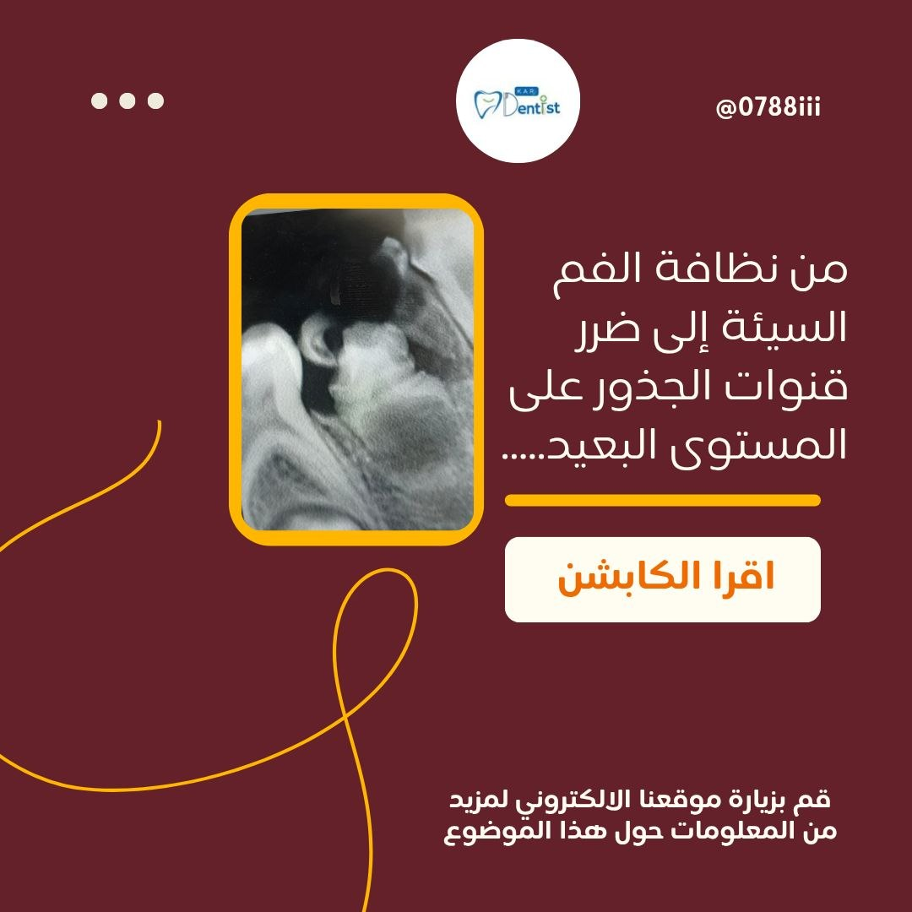

أمراض اللب السني عند الأطفال
من نظافة الفم السيئة إلى ضرر قنوات الجذور على المستوى البعيد
إهمال تسوس السن اللبني قد يؤدي إلى موت العصب، فتتكاثر البكتيريا داخل قناة الجذر وتنتقل إلى الأنسجة المحيطة بالذروة، مسببة "التهاب اللثة حول الذروة المزمن" (Chronic Apical Periodontitis). هذه العدوى لا تبقى محصورة بالسن اللبني، بل تمتد لتصيب السن الدائم النامي أسفله، المحاط بغلاف حيوي يُسمى الكيس السني.
ماذا أثبت البحث العلمي؟
دراسة استرجاعية على 185 صورة أشعة بانورامية لأطفال بعمر 4-10 سنوات، شملت 256 ضرساً لبنياً مصاباً مقارنة بـ245 ضرساً سليماً، أظهرت:
- كلما زاد ارتشاف جذر السن اللبني بفعل العدوى، زاد الضرر الواصل للكيس السني للسن الدائم أسفله
- فروقات واضحة بنمو وتطور السن الدائم بالجانب المصاب، خصوصاً بعمر 4-7 سنوات
- العدوى المزمنة تؤثر على شكل ومسار بزوغ السن الدائم، وقد تفسر بزوغه بموضع غير طبيعي كما بحالتنا اليوم
- بحث مكمل وجد أن تخرب العظم المحيط بالعدوى قد يسرّع بزوغ السن الدائم بشكل غير منتظم قبل أوانه
الخلاصة: إهمال تسوس السن اللبني ليس مشكلة مؤقتة، بل قد يترك أثراً دائماً على صحة وشكل السن الدائم الذي سيرافق الطفل لبقية حياته.
التوصيات
- فحص دوري كل 6 أشهر دون انتظار الألم
- علاج أي تسوس فوراً حتى بالأسنان اللبنية
- استشارة مختص عند ملاحظة أي تغيّر بلون السن أو ببزوغه
صحة السن اللبني اليوم استثمار بصحة السن الدائم غداً.